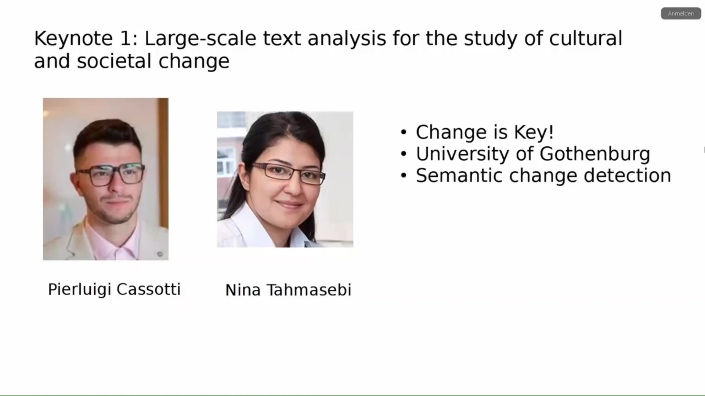
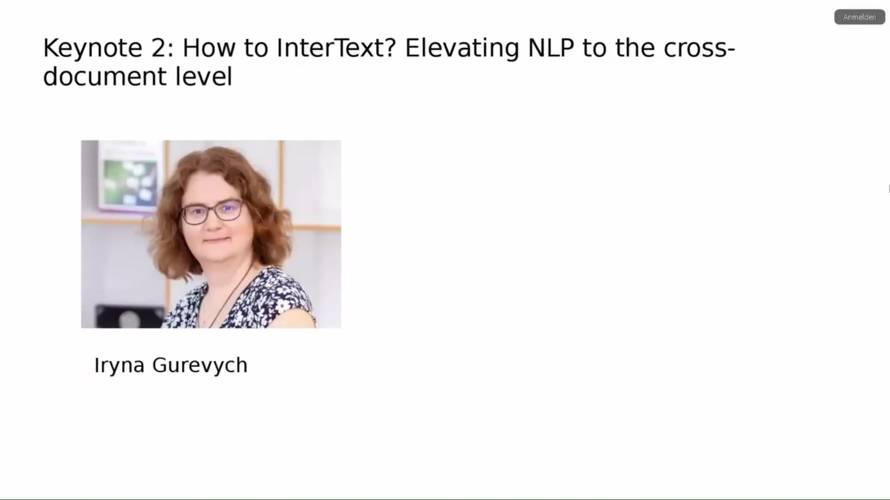

Large Language Models for the History, Philosophy and Sociology of Science
Overview
The workshop, “Large Language Models for the History, Philosophy and Sociology of Science”, convened from 2-4 April 2025, at TU Berlin and online. Adrian Wüthrich, Gerd Graßhoff, Arno Simons, and Michael Zichert orchestrated the programme, which attracted considerable interest. Over 50 paper submissions were received, and approximately 220 participants registered for this three-day event. The European Research Council’s Network Epistemology in Practice (NEPI) grant (number 10104932) provided the essential funding.
The workshop’s conceptualisation arose from two distinct yet complementary initiatives. Firstly, within the NEPI project, Arno Simons pioneered the training of early large language models on physics texts, whilst Michael Zichert applied these models to analyse conceptual issues in physics. Secondly, Gerd Graßhoff, a long-standing collaborator, consistently advocated for integrating artificial intelligence into the history and philosophy of science, particularly for scrutinising scientific discovery processes. These converging interests culminated in a unified workshop, fostering broader discussion on AI-assisted methods.
The NEPI project itself meticulously investigates the internal communication dynamics of the Atlas collaboration at CERN, the renowned particle physics laboratory. The research team employs network analysis to map communication structures and utilises semantic tools, including large language models, to trace the flow of ideas within these complex networks. This endeavour aims to elucidate how large research collaborations collectively generate new knowledge.
The workshop featured two distinguished keynote speakers. Pierluigi Cassotti and Nina Tahmasebi, from the University of Gothenburg, presented their work on large-scale text analysis for cultural and societal change, focusing on semantic change detection and data science for the humanities. Iryna Gurevych, who heads the Ubiquitous Knowledge Processing Lab at Technical University Darmstadt, delivered a keynote on elevating Natural Language Processing to the cross-document level, covering information extraction, semantic text processing, machine learning, and NLP applications in the social sciences and humanities.
Logistical arrangements for the workshop were comprehensive. The organisers recorded sessions with a camera focused on the presenter, four microphones, and an iPhone backup. They intend to upload videos of talks, including discussions, to the NEPI YouTube channel, subject to presenter consent. A structured Q&A protocol facilitated engagement, limiting questions to four per session to ensure efficiency. Furthermore, an Etherpad or Cryptpad provided an asynchronous platform for comments and questions, whilst the Zoom chat enabled real-time interaction. Ample networking opportunities were provided through scheduled lunch and coffee breaks, a modest reception, and a limited-seat workshop dinner.
2.1 Workshop Overview and Participation

Adrian Wüthrich, Gerd Graßhoff, Arno Simons, and Michael Zichert co-organised the workshop, “Large Language Models for the History, Philosophy and Sociology of Science”, held from 2-4 April 2025. This event welcomed participants both at TU Berlin’s Room H2005 and via a dedicated online platform.
The call for papers generated significant interest, attracting over 50 submissions. From this competitive pool, the organisers meticulously selected 16 papers for presentation during the workshop. Participation levels proved robust: in-person attendance quickly reached capacity, whilst a substantial online audience also registered. Overall, approximately 220 individuals enrolled for the workshop, with additional registrations continuing to arrive. Crucially, the organisers aimed to ensure that all individuals interested in these topics could actively participate in the discussions throughout the two-and-a-half-day programme.
2.2 Workshop Genesis and NEPI Project Objectives

The workshop’s inception stemmed from two distinct yet complementary initiatives. Firstly, the Network Epistemology in Practice (NEPI) project provided a foundational impetus. Within this project, Arno Simons pioneered the training of one of the earliest large language models specifically on physics texts, aligning with the project’s core interests. Concurrently, Michael Zichert, also a member of the NEPI team, applied large language models to scrutinise conceptual issues prevalent in physics.
Secondly, Gerd Graßhoff, a long-standing collaborator of Adrian Wüthrich, significantly contributed to the workshop’s genesis. Graßhoff has consistently championed the integration of artificial intelligence into the history and philosophy of science, particularly for analysing the intricate processes of scientific discovery. He independently conceived a workshop focused on novel AI-assisted methodologies for these disciplines. Recognising their shared objectives, the organisers subsequently decided to combine their efforts, culminating in the present workshop.
The European Research Council (ERC) grant, Network Epistemology in Practice (NEPI), bearing grant number 10104932, provides the funding for this endeavour. Within the NEPI project, the research team meticulously studies the internal communication of the Atlas collaboration at CERN, the prominent particle physics laboratory. This investigation aims to elucidate how one of the largest and most distinguished research collaborations collectively generates new knowledge. The team employs network analysis to discern the communication structures within this collaboration. Furthermore, they utilise semantic tools, including large language models, to trace the flow of ideas throughout these complex network structures. Indeed, the application of large language models represents a central interest for the project, with numerous other applications anticipated throughout the workshop.
2.3 Recording Protocols and Consent

The organisers are currently recording the workshop sessions. Participants received prior notification of this during the registration process, thereby implying their consent. A single camera captures the presenter, ensuring focus remains on the speaker. For audio capture, four microphones are deployed, supplemented by an iPhone serving as a crucial backup recorder.
Following the workshop, the organisers intend to upload videos of the talks, encompassing the accompanying discussions, to the NEPI YouTube Channel. This process, however, necessitates the explicit consent of each presenter. Crucially, whilst discussions are recorded, the audio and video capture solely focuses on the presenter, deliberately excluding the audience. Should any participant require additional information or wish to withdraw their consent, they are encouraged to approach the organisers. Ultimately, these recording efforts aim to establish a comprehensive record of the valuable discussions and presentations from this meeting.
2.4 Engagement Protocols and Interaction Channels

Given the substantial number of participants and the constrained time allocated for presentations, the organisers have implemented a specific protocol for questions and comments. Participants are kindly requested to formulate their questions and comments concisely and directly. Following each presentation, the organisers will collect approximately four questions or comments, enabling the presenter to address them collectively, thereby optimising time and avoiding protracted back-and-forth exchanges. The organisers acknowledge that, despite the value of all inquiries, time limitations may preclude addressing every question in person.
To facilitate broader engagement beyond the live sessions, the organisers provide an Etherpad or Cryptpad. This platform allows participants to post comments or questions after sessions, offering presenters an opportunity to read and respond at their convenience. Consequently, this channel ensures continuous interaction even when sessions are not actively running. Furthermore, during live sessions, both online attendees and the in-person audience can utilise the Zoom chat feature to submit questions or comments at any time.
2.6 Keynote 1: Large-scale Text Analysis for Cultural and Societal Change

The first keynote address, titled “Large-scale text analysis for the study of cultural and societal change”, featured Pierluigi Cassotti and Nina Tahmasebi from the University of Gothenburg. Nina Tahmasebi serves as the Principal Investigator for the “Change is Key” research programme in Gothenburg, whilst Pierluigi Cassotti contributes as a researcher within this project.
These scholars have garnered considerable recognition for their pioneering work in semantic change detection. Their contributions encompass not only technical advancements, such as the development of crucial benchmarks, but also broader methodological considerations concerning the application of data science methods to humanities questions. This dual expertise renders their work exceptionally pertinent to the workshop’s themes.
2.7 Keynote 2: Elevating NLP to the Cross-Document Level

Iryna Gurevych delivered the second keynote address, scheduled for the late afternoon of the following day, under the title “How to InterText? Elevating NLP to the cross-document level”. Gurevych heads the Ubiquitous Knowledge Processing (UKP) Lab at Technical University Darmstadt.
Her extensive research primarily focuses on information extraction, semantic text processing, and machine learning. Crucially, her work also explores the practical applications of Natural Language Processing (NLP) within the social sciences and humanities. This specific area of expertise positions her contributions as an ideal complement to the workshop’s overarching objectives.